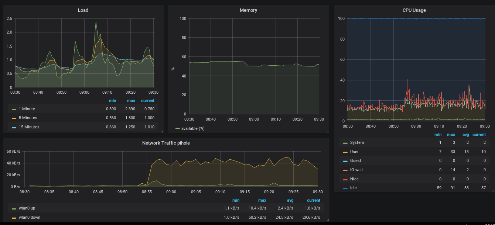
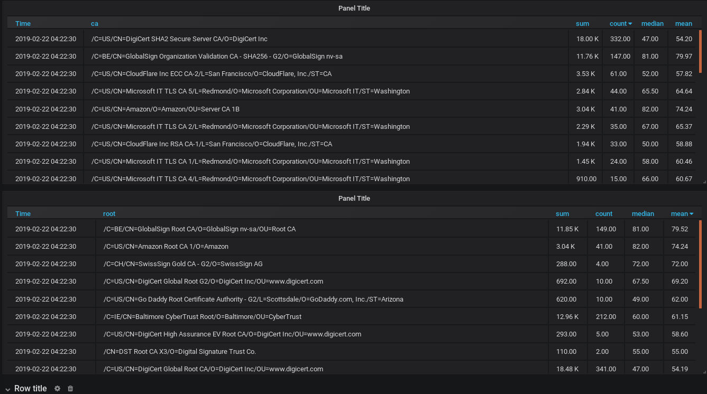
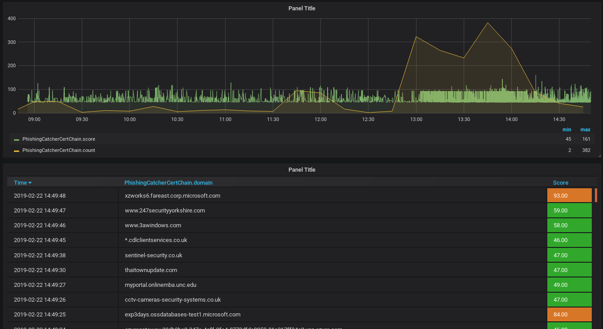
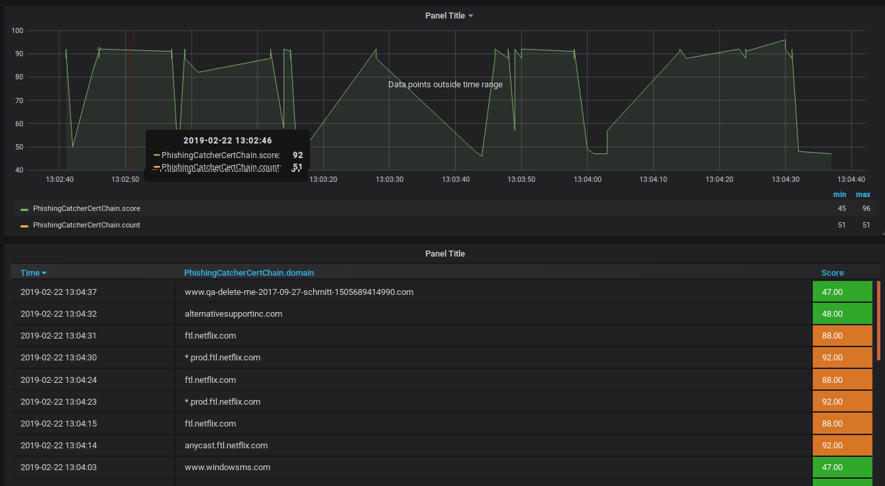
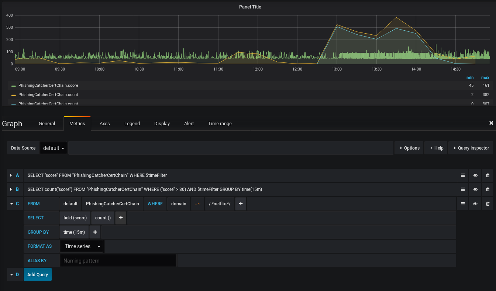

Certstream, InfluxDB, Grafana und Netflix
Nachdem ich vor kurzem über mein erstes Spielen mit dem certstream berichtete, habe ich weitere Experimente gemacht und die Daten zur besseren Auswertung in eine InfluxDB gepackt, um sie mit Grafana untersuchen zu können.
Am Freitag, dem 22.02.2019 habe ich das Experiment gestartet und folgendes festgestellt: Zunächst ist es sehr einfach gewesen, die Daten aus dem Certstream in InfluxDB zu übernehmen. Zu diesem Zweck habe ich das Repository zunächst geforkt und die entsprechend notwendigen Änderungen daran vorgenommen. Dieses Experiment führte ich auf meinem Raspi durch.

{kind=link}
Nachdem ich das Programm ein wenig getweakt hatte. konnte ich in Grafana unter anderem darstellen, welche root-CA für die meisten Zertifikate in einem bestimmten Zeitraum mit den höchsten Scoring-Werten verantwortlich war, bzw. welche CA in einem bestimmten Zeitraum die meisten Zertifikate mit den höchsten Scoring-Werten ausstellte.

{kind=link}
Nicht überraschend, dass hier LetsEncrypt vornlag - aber LetsEncrypt wird ja öfters mit Vertrauen verwechselt. Dabei kann man am Namen schon erkennen, dass es hier nur um Verschlüsselung geht: Niemend sollte sich bei einem LetsEncrypt-Zertifikat darauf verlassen, dass der Server am anderen Ende der Verbindung auch wirklich zu der Organisation gehört, die im Zertifikat behauptet wird. Aber das nur am Rande...
Nachdem das Experiment einige Zeit gelaufen war bemerkte ich eine plötzliche Häufung besonders hoch bewerteter neu ausgestellter Zertifikate:

{kind=link}
Das interessierte mich und ich zoomte an der Stelle mit großer Häufung in die Daten hinein:

{kind=link}
Mein erster Gedanke war: "Na wenn es da demnächst nicht mal ne große Offensive zum Abgleichen der Konteninformationen bei Netflix gibt... " Ich wollte mir aber ganz sicher sein und es noch genauer wissen - zu diesem Zweck definierte ich eine weitere Abfrage in Grafana, die mir zeigen sollte, wie viele Zertifikate jeweils pro 15 Minuten ausgestellt wurden, die für eine Domain mit netflix im Namen standen. Die Ergebnisse dieser Abfrage sind hier durch den neuen türkisen Graphen dargestellt:

{kind=link}
Die Abfrage kann man übrigens nicht zusammenklicken - man muss dazu mit der speziellen regex-Syntax von InfluxDB arbeiten, die Grafana nicht von sich aus anbietet...
Artikel, die hierher verlinken
Repo auf Github (Telegraf)
29.06.2019
Nachdem ich nun schon geraume Zeit mit Telegraf, InfluxDB und Grafana experimentiere, habe ich ein Repository auf Github dafür angelegt.
Conky & InfluxDB
29.06.2019
Nachdem ich hier schon länger nichts mehr über Conky berichtet habe, aber immer noch ein großer Fan bin habe ich nun versucht, Conky mit InfluxDB zu verbinden.
Raspi als VPN-Endpunkt
15.06.2019
Es war wieder einmal an der Zeit, meinen Raspi um neue Funktionalität zu erweitern...
Certstream - Ressourcenverbrauch
24.05.2019
In meinem letzten Artikel zur Auswertung globaler Zertifikatslog war unter anderem ein Screenshot zu sehen, der die Systembelastung des für die Durchführung der Tests benutzten Raspberry Pi darstellte.
Tags
Android Basteln C und C++ Chaos Datenbanken Docker dWb+ ESP Wifi Garten Geo Git(lab|hub) Go GUI Hardware Java Jupyter Komponenten Links Linux Markup Music Numerik PKI-X.509-CA Python QBrowser Rants Raspi Revisited Security Software-Test sQLshell TeleGrafana Verschiedenes Video Virtualisierung Windows Upcoming...


Neueste Artikel
-
 Neues GitHub-Projekt: duckylights
Neues GitHub-Projekt: duckylights
Nachdem ich mich relativ spät im Leben dazu durchgerungen habe, endlich eine ordentliche Tastatur zu versuchen und auch dieses Mal wirklich eine bekommen hatte (Caseking hatte die Bestellung zwar angenommen, mich aber hinterher darüber informiert, dass das Modell nicht nur nicht lieferbar war, sondern auch nicht klar sei, ob sich dieser Zustand jemals wieder ändern würde), wollte ich wissen, wie einfach es wäre, die Beleuchtung unter Linux nutzen zu können.
Weiterlesen... -
 TeX in Gitlab
TeX in Gitlab
Nach meinen Arbeiten zur Erstellung eines Docker-Containers, der die Funktionalität von WireViz als Microservice verfügbar macht habe ich die entsprechenden Änderungen beim Projekt als Pull-Request eingereicht.
Weiterlesen... -
Hardware für Netzwerk Degrader
Vor ungefähr einem Jahr berichtete ich über den letzten Stand meines Projektes "Schlechtes Netz" - eines smarten Netzwerkkabels mit konfigurierbarer Übertragungsqualität.
Weiterlesen...
Manche nennen es Blog, manche Web-Seite - ich schreibe hier hin und wieder über meine Erlebnisse, Rückschläge und Erleuchtungen bei meinen Hobbies.
Wer daran teilhaben und eventuell sogar davon profitieren möchte, muß damit leben, daß ich hin und wieder kleine Ausflüge in Bereiche mache, die nichts mit IT, Administration oder Softwareentwicklung zu tun haben.
Ich wünsche allen Lesern viel Spaß und hin und wieder einen kleinen AHA!-Effekt...
PS: Meine öffentlichen GitHub-Repositories findet man hier.